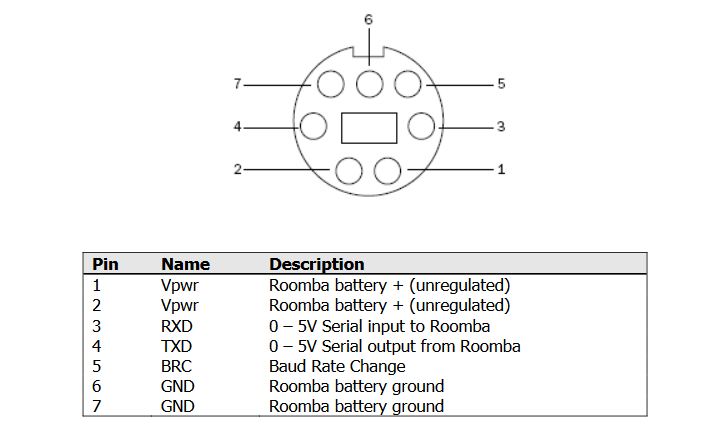
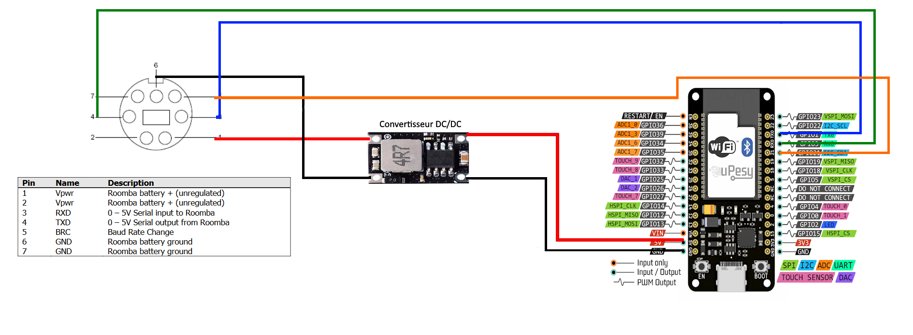

Intégrer de la domotique dans un produit vieux de 16 ans
Le Roomba est l’un des premiers robots aspirateurs, commercialisé en 2002. Cette technologie était révolutionnaire pour l’époque et le prix était plutôt couteux. De nos jours, de nombreux constructeurs proposent des robots aspirateurs connectés en Wifi avec d’innombrables fonctionnalités. Je me rappelle étant petit, que nous avions un de ces robots. En cherchant un peu, je le retrouve sous les cartons empilés.
Ce robot est le Roomba 551, il a été commercialisé en 2008 et apportait à l’époque la programmation automatique de nettoyages. En essayant de le charger, rien ne se passe, je le démonte et je retrouve une batterie complétement rouillée et à plat. J’en décide d’en commander une autre et je remarque un port DIN7 sur la face supérieure de l’appareil.

En faisant quelques recherches, je tombe sur toute une documentation destinée à la programmation et à la modification du firmware, ce programme s’appelle l’iRobot Roomba Open Interface ( http://www.robotikasklubs.lv/read_write/file/Piemers/iRobot_Roomba_500_Open_Interface_Spec.pdf ).
 Pin map port DIN7 dans l’iRobot Roomba Open Interface
Tout y est décrit, les spécificités de la communication série, les opcodes de contrôle de l’appareil, le poids, la vitesse, les capteurs, tout y est. Une seule chose me vient en tête, c’est de connecter cet aspirateur Robot à Home Assistant. Il me suffit juste d’intégrer une solution avec un microcontrôleur Wifi.
Choix du microcontrolleur et schéma de cablâge
Le premier choix pour un microcontrôleur avec des capacités Wi-Fi est l’ESP, et plus précisément l’ESP32. C’est la plateforme la plus simple, la plus complète et la moins chère actuellement. On la retrouve sur tous les appareils domotiques, sous différentes formes, mais cela reste la même puce. J’opte pour un module ESP32-WROOM à 2€.
Ce module ESP nécessite une alimentation de 5V, cependant aucun pin du port DIN7 ne fournit celle-ci. Un port fournit l’alimentation directe provenant de la batterie. Celle-ci indique une tension de 14.4V, mais il est bien évident que la tension d’une batterie varie avec sa charge. C’est pourquoi j’ai choisi un convertisseur DC-DC buck afin de simplement réduire la tension, qu’elle soit de 14V ou de 11V à 5V pour l’ESP32. Le câblage sera le suivant :
 Schéma de câblage de l’ESP et du convertisseur buck
Le pin BRC permettra d’allumer le Roomba s’il s’éteint. C’est la seule manière pour le réveiller avec l’appui physique du bouton.
Debug et tests communication série
Avant de câbler, je décide de tester simplement la communication série à l’aide d’une plateforme que je connais mieux : Arduino. Dès notre première année de BUT GEII nous avons pu concevoir une carte Arduino Leonardo en CAO et souder ses composants.

Cette carte permet l’utilisation de deux ports série matériels en même temps, ce qui est plus simple et plus pratique pour tester le robot. Avec une simple configuration multiserial je le câble et j’obtiens un petit message de mon robot :
 Apparament il est resté bloqué en 2010…
Apparament il est resté bloqué en 2010…
Je décide d’aller plus loin et de chercher des travaux préexistants sur le Roomba en Arduino. Je tombe sur ce repo Github ( https://github.com/pkyanam/ArduRoomba ) et tout y est. Toutes les commandes et les opcodes associés. J’essaie alors la commande Start (Initialisation com série), Safe (Safe Mode Roomba) puis Clean (Mode nettoyage), et le robot lance un cycle de nettoyage. C’est merveilleux !
Je décide enfin de câbler mon ESP, ce câblage est temporaire le temps que la solution fonctionne :

ESPHome, un framework simple et puissant
ESPHome est un framework qui permet de programmer des microcontrôleurs ESP très simplement et de les intégrer dans des systèmes domotiques pré-existants. Pour ma part ça sera Home Assistant.
Afin d’installer ESPHome sur Home Assistant, je me rends dans Modules complémentaires / Store / ESPHome. Une fois le module installé, on arrive sur une page permettant d’ajouter un appareil avec New Device. À partir de là, tout est guidé. Il suffit d’installer ESPHome ainsi qu’une configuration Wi-Fi sur un microcontrolleur branché en USB. Une fois cela, fait-il n’y a plus besoin de brancher l’appareil et les mises à jour peuvent se faire en OTA (Over The Air).
Le fichier de configuration permet de directement intégrer du code sur l’appareil et de faire le lien avec les entités Home Assistant. Mon premier fichier de configuration utilise la fonction UART de ESPHome afin de communiquer avec le robot :
Première config : Commande seulement
# Config ESPHome
esphome:
name: roombaesp
friendly_name: roombaesp
esp32:
board: esp32dev
framework:
type: arduino
# Pour des raisons de sécurité les config Wifi et API on été supprimées
# Initialisation UART
uart:
baud_rate: 19200
tx_pin: GPIO1
rx_pin: GPIO3
stop_bits: 1
output:
- platform: gpio
id: brc_pin
pin: GPIO21
inverted: false
# Commandes du Roomba
switch:
- platform: template
name: "Setup"
turn_on_action:
then:
- output.turn_on: brc_pin
- delay: 2s
- repeat:
count: 3
then:
- output.turn_off: brc_pin
- delay: 100ms
- output.turn_on: brc_pin
- delay: 100ms
- uart.write: [128]
- delay: 100ms
- uart.write: [131]
- platform: template
name: "Clean"
turn_on_action:
- uart.write: [135]
- platform: template
name: "Power"
turn_on_action:
- uart.write: [133]
- platform: template
name: "Base"
turn_on_action:
- uart.write: [143]
- platform: template
name: "Start"
turn_on_action:
- uart.write: [128]
- platform: template
name: "Safe"
turn_on_action:
- uart.write: [131]
Cette configuration fonctionne, mais aucun retour d’information du robot n’est disponible. Il est possible d’écrire un bout de code pour récupérer chaque information, mais par chance, cela a déjà été fait par la communauté ESPHome (voir https://community.home-assistant.io/t/add-wifi-to-an-older-roomba/23282 ). Il me suffit de combiner mon code et celui de ce repo github sur la branche UART ( https://github.com/davidecavestro/ESPHomeRoombaComponent/tree/uart ) afin d’à la fois avoir les capteurs, mais aussi les commandes !
Deuxième config : Commande et capteurs
# Config ESPHomes et Bibliothèques
esphome:
name: "roomba"
platform: esp32
board: esp32dev
includes:
- ESPHomeRoombaComponent.h
libraries:
- EspSoftwareSerial
- Roomba=https://github.com/davidecavestro/Roomba.git
substitutions:
friendly_name: "Roomba"
# BRC pin, RX pin, TX pin, polling interval in milliseconds
# Pin 3 is labeled rx on the wemos d1 mini, 1 is labeled TX We don't use the hardware UART but we're using its pins!
init: 'RoombaComponent::instance(21, id(uart_bus), 8000, false);'
# Pour des raisons de sécurité les config Wifi et API on été supprimées
# Initialisation UART
uart:
id: uart_bus
tx_pin: GPIO1
rx_pin: GPIO3
baud_rate: 115200
# Enable logging
logger:
hardware_uart: UART1
# Capteurs du Roomba
custom_component:
- lambda: |-
auto r = ${init}
return {r};
sensor:
- platform: custom
lambda: |-
auto r = ${init}
return {r->voltageSensor, r->currentSensor, r->batteryChargeSensor, r->batteryCapacitySensor, r->batteryPercentSensor, r->batteryTemperatureSensor, r->driveSpeedSensor};
sensors:
- name: "${friendly_name} voltage"
unit_of_measurement: "V"
icon: mdi:sine-wave
accuracy_decimals: 2
filters:
- quantile:
window_size: 7
send_every: 4
send_first_at: 3
quantile: .9
- multiply: 0.001
- name: "${friendly_name} current"
unit_of_measurement: "A"
icon: mdi:lightning-bolt
accuracy_decimals: 3
filters:
- quantile:
window_size: 7
send_every: 4
send_first_at: 3
quantile: .9
- multiply: 0.001
- name: "${friendly_name} charge"
unit_of_measurement: "Ah"
icon: mdi:battery-charging
accuracy_decimals: 2
filters:
- quantile:
window_size: 7
send_every: 4
send_first_at: 3
quantile: .9
- multiply: 0.001
- name: "${friendly_name} capacity"
unit_of_measurement: "Ah"
icon: mdi:battery
accuracy_decimals: 2
filters:
- quantile:
window_size: 7
send_every: 4
send_first_at: 3
quantile: .9
- multiply: 0.001
- name: "${friendly_name} battery"
unit_of_measurement: "%"
state_class: "measurement"
device_class: battery
icon: mdi:battery-outline
accuracy_decimals: 0
filters:
- quantile:
window_size: 7
send_every: 4
send_first_at: 3
quantile: .9
- name: "${friendly_name} temperature"
unit_of_measurement: "°C"
icon: mdi:thermometer
accuracy_decimals: 0
filters:
- quantile:
window_size: 7
send_every: 4
send_first_at: 3
quantile: .9
- name: "${friendly_name} drive speed"
unit_of_measurement: "mm/s"
icon: mdi:speedometer
accuracy_decimals: 0
text_sensor:
- platform: custom
lambda: |-
auto r = ${init}
return {r->chargingSensor, r->activitySensor, r->oiModeSensor};
text_sensors:
- name: "${friendly_name} charging state"
icon: mdi:battery-charging-high
- name: "${friendly_name} activity"
icon: mdi:robot-vacuum-variant
- name: "${friendly_name} OI mode"
icon: mdi:steering
# Commandes du Roomba
button:
- platform: template
name: "Locate"
on_press:
lambda: |-
auto r = ${init}
r->on_command("locate");
- platform: template
name: "Dock"
on_press:
lambda: |-
auto r = ${init}
r->on_command("dock");
- platform: template
name: "Clean"
on_press:
lambda: |-
auto r = ${init}
r->on_command("start");
- platform: template
name: "Sleep"
on_press:
lambda: |-
auto r = ${init}
r->on_command("sleep");
Tout fonctionne parfaitement et tout est disponible sur Home Assistant :

Template Home Assistant et Assistants vocaux
Maintenant, je souhaite faire en sorte que mon appareil s’affiche en tant que robot aspirateur. Cela permettra l’intégration de services comme Apple Homekit ou Google Assitant. Pour cela, rien de plus simple, il me suffit de faire une Vacuum Template sur Home Assistant. L’objectif est simplement de reprendre les entités de l’ESP32 et de les associer à chaque fonctionnalité d’une entité robot aspirateur :
vacuum:
- platform: template
vacuums:
roomba:
value_template: "{{ states('sensor.roomba_activity')|lower }}"
battery_level_template: "{{ states('sensor.roomba_battery')|int }}"
attribute_templates:
activity: "{{ states('sensor.roomba_activity') }}"
oi_mode: "{{ states('sensor.roomba_oi_mode')|title }}"
charging_state: "{{ states('sensor.roomba_charging_state') }}"
temperature: "{{ states('sensor.roomba_temperature')|int }} °C"
voltage: "{{ states('sensor.roomba_voltage')|int }} V"
start:
service: button.press
target:
entity_id: button.clean
stop:
service: button.press
target:
entity_id: button.locate
return_to_base:
service: button.press
target:
entity_id: button.dock
On obtient bien notre appareil qui est prêt à être intégré sur les assistants vocaux :

Il me reste plus qu’à attendre la mise à jour Apple Homekit plus tard cette année pour le support des robots aspirateurs. :)